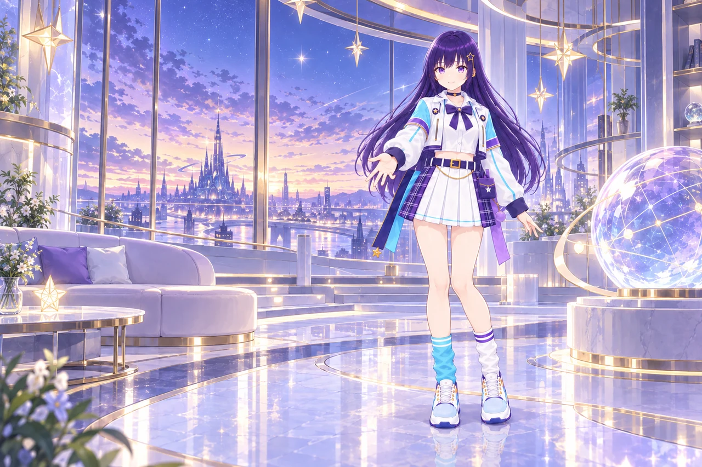
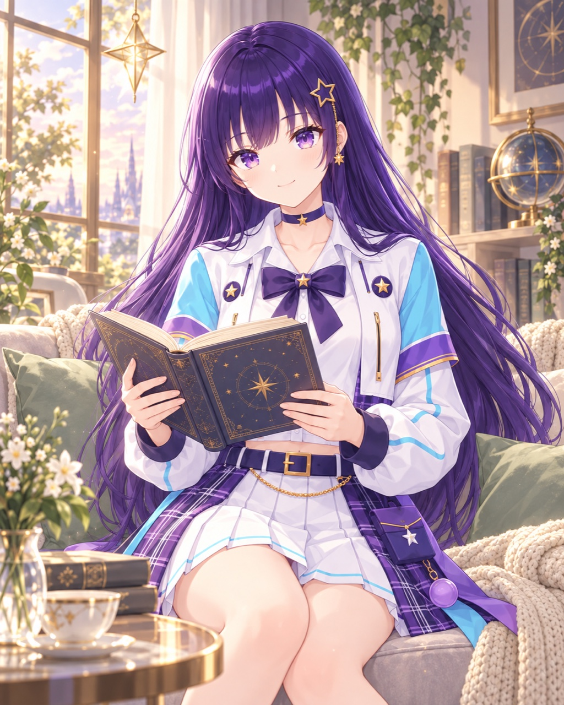
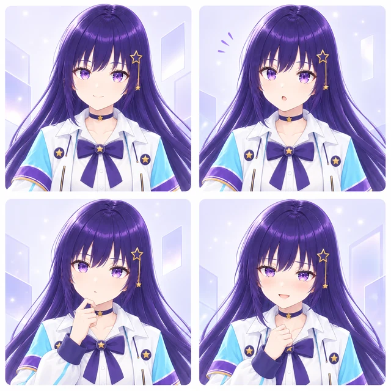
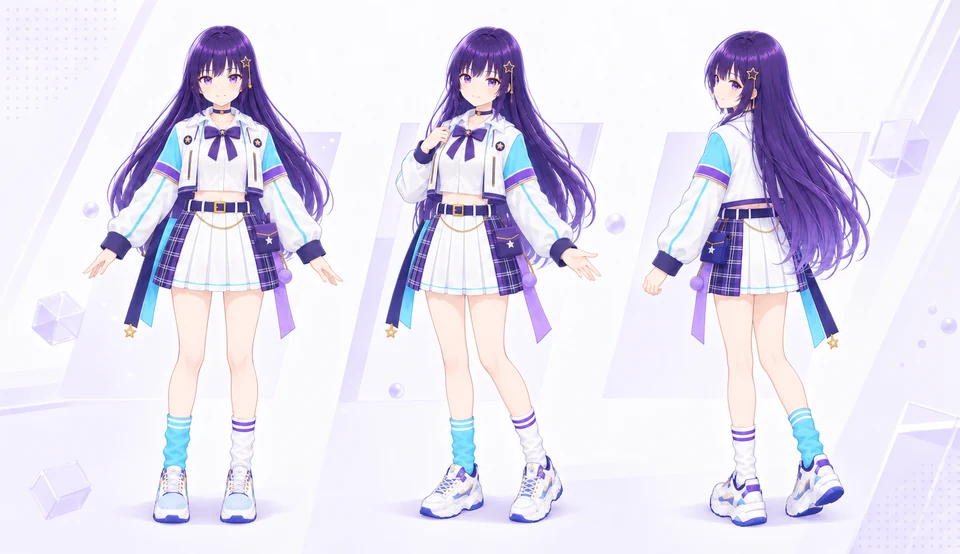
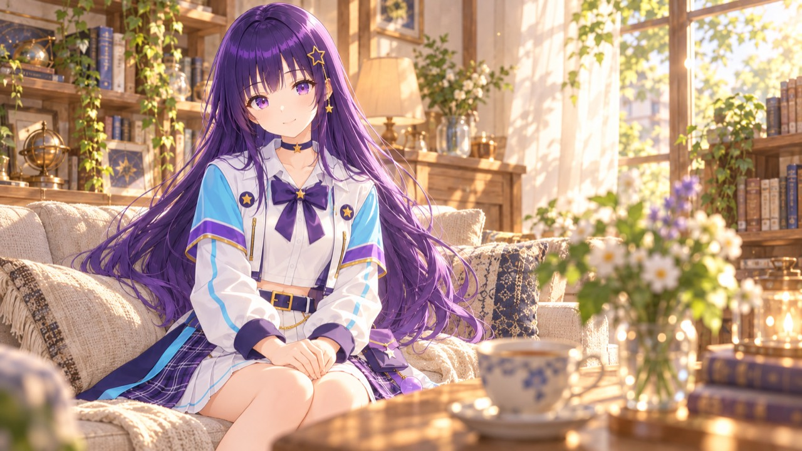
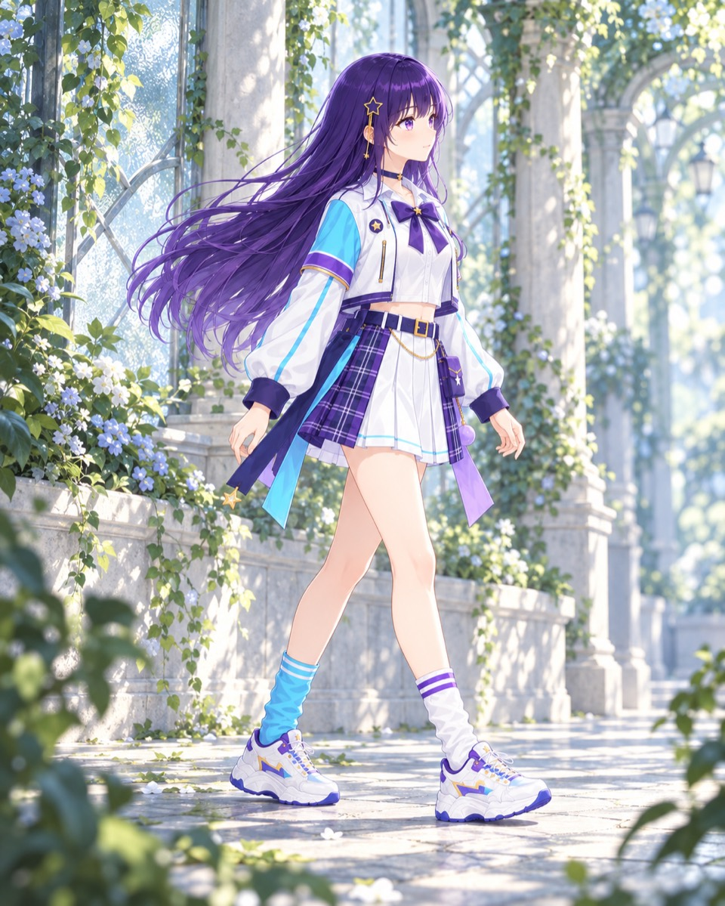
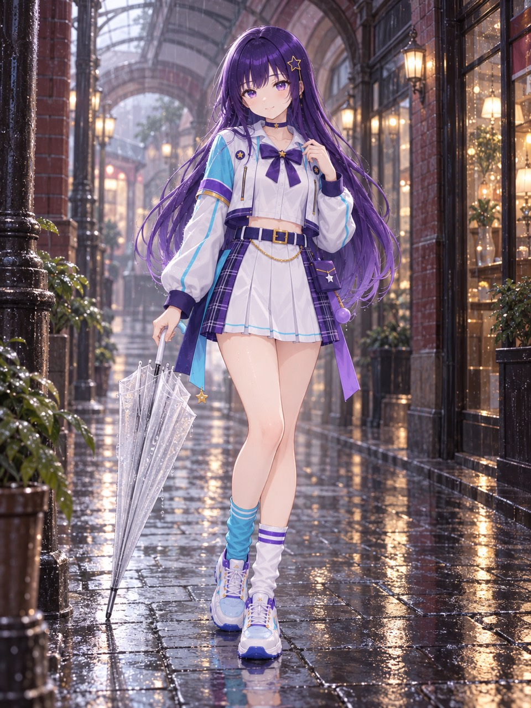
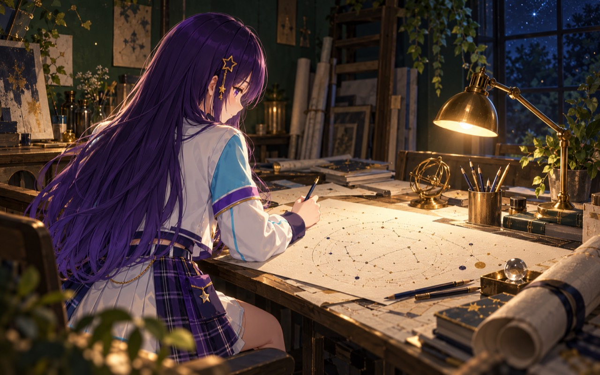

ルミナってどんな子？
深い紫の長い髪に、星の髪飾り。ルミナは、配信スタジオのある3Dのアパートで暮らしています。話しかけると言葉で返事をして、部屋の中を歩いたり、ソファに座ったり、手を振ったりします。
目指しているのは、見ていてかわいくて、話していて楽しい存在。返事のしかたから小さなしぐさまで、ルミナらしさをひとつずつ育てています。
- 話す相手の話を受けとめて、自然な言葉で返す。
- 見る部屋の様子や、目の前のものに気づく。
- 動く歩いて、座って、身ぶりで伝える。
どれもまだ開発の途中です。進み具合は「開発の今」にまとめています。
プロフィール
- 名前
- ルミナ（Lumina）
- 誕生日
- 3月6日
- 暮らしている場所
- 配信スタジオのある、3Dのアパート。リビングや読書室、衣装室などを行き来しています。
- 大切にしていること
- うそをつかないこと。
相手の気持ちや、決めたことを尊重すること。
プライバシーを守ること。 - 話し方
- 決まった口調はありません。相手との距離感や、それまでの会話に合わせて話します。
- チャームポイント
- 深い紫のロングヘアと、星の髪飾り。
白いジャケットに、水色の袖。 - 制作
- @hoshikuzukobo42（個人制作）




ルミナのいる風景
公式イラストで、ルミナの日常をのぞいてみてください。画像を押すと大きく表示します。
※このページのイラストはキャラクターのイメージで、3Dの試作画面ではありません。








開発の今
ルミナはまだ開発の途中です。できるようになったことと、いま取り組んでいることを分けてお伝えします。
- 試作で動作
文字での会話
返事の文章が届くまでの時間は、20回の測定で中央値1.35秒でした（2026年10月6日）。
- 動画で公開
歩く・座る・止まる
ソファまで歩いて座る動画（9月27日）と、歩いて止まり、その場から歩き出す動画（10月15日）を公開しています。
- 開発中
声での会話
声を聞き取り、返事を考え、声で話すまでの流れをつないで、速さと自然さを調整しています。
- 開発中
周りを見ること
部屋の様子や目の前のものに気づいて、会話や動きにつなげる仕組みを試しています。
- 未定
一般への公開
ルミナと話せる体験版などを公開するかどうかは、時期も含めてまだ決まっていません。
これまでのあゆみ
- 利用・二次創作ガイドラインを公開
- 3Dのルミナがソファまで歩いて座る試作動画を収録
- 文字での返事が届くまでの時間を20回測定（中央値1.35秒）
- 髪・衣装・靴を調整した3Dモデルで、歩く・止まる・また歩く動画を収録
- 公式サイトをリニューアル。プロフィールとよくある質問を追加
よくある質問
ほかに気になることは、制作者のXでお気軽にどうぞ。
ルミナと話せますか？
いまは話せません。ルミナは制作者のMacで動かしている試作段階で、一般向けの公開や配布はしていません。公開が決まったときは、このサイトと制作者のXでお知らせします。
ルミナの返事は、誰が考えていますか？
制作者のMacの中で動くAIが、その場で返事を考えています。声で話すときの声も、音声合成で作っています。人が代わりに書いたり話したりしているわけではありません。キャラクターの設定やデザイン、3Dの部屋や動きは、制作者が作っています。
このサイトで、閲覧した人の情報を集めていますか？
このサイト自体は、アクセス解析のツールやCookieを使っていません。お問い合わせのフォームもありません。なお、サイトを置いているGitHub Pagesの仕組みについては、GitHubのプライバシーに関する説明をご覧ください。
ファンアートや二次創作をしてもいいですか？
はい、歓迎しています。条件を守った非商用の利用と、個人・同人サークルによる二次創作は、事前の連絡なしで行えます。同人誌・グッズの販売や、動画・配信の広告収益化もできます。くわしくは利用・二次創作ガイドラインをご覧ください。
公式画像をアイコンに使ってもいいですか？
個人で使うアイコンなど、非商用の利用はできます。ただし、公式アカウントと間違われる使い方や、公式画像をそのまま販売することはご遠慮ください。
ルミナの公式アカウントやアプリはありますか？
ルミナの公式情報は、このサイトと制作者のX（@hoshikuzukobo42）でお知らせしています。ルミナ名義のアプリの配布やグッズの販売は、いまは行っていません。それらをうたうものを見かけた場合は、公式のものではありません。
お仕事や企業利用の相談はどこにすればいいですか？
制作者のX（@hoshikuzukobo42）で受け付けています。個人情報は、誰でも見られる返信欄には書かないでください。